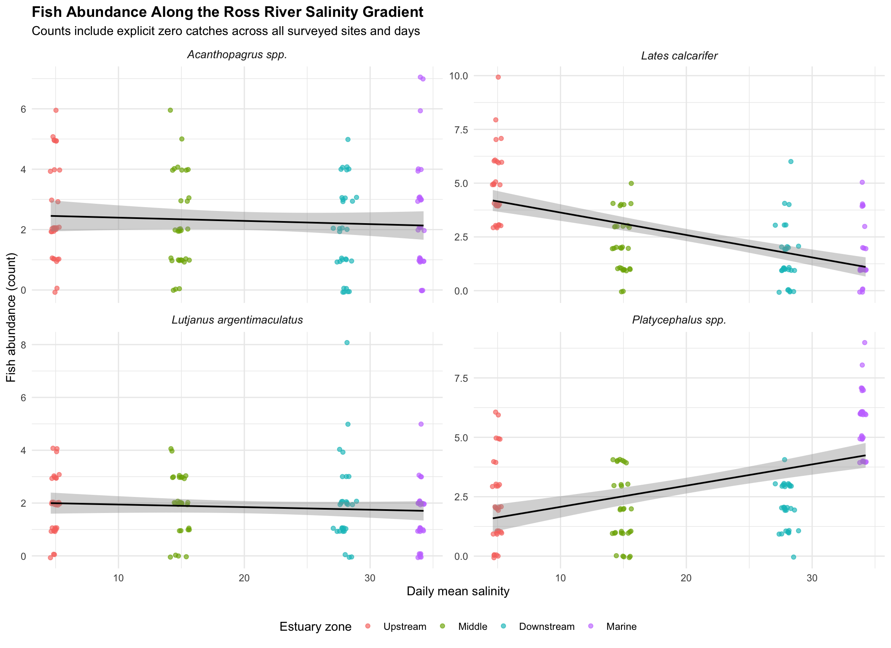

| Check | Value |
|---|---|
| Total site-date-species records | 480 |
| Explicit zero-catch records | 53 |
| Missing scientific names | 0 |
| Missing estuary zones | 0 |
| Missing salinity values | 0 |
| Remaining legacy turbidity errors | 0 |
R for Marine Science Workshop 2
Estuary Fish Survey: Data Rescue Mission
This workshop focused on extracting ecological information from messy datasets using advanced data wrangling in R. I combined fish catch records, spatial metadata, high-frequency water quality data and a species dictionary from the Ross River estuary into one clean master dataset. The workflow required reshaping data, standardising text fields, parsing timestamps, handling sensor errors, constructing explicit zero catches and joining multiple data sources.
Data Cleaning and Integration
The raw datasets contained several issues that prevented immediate analysis. Fish catch records were stored across multiple Excel sheets, site and species names used inconsistent spelling and formatting, timestamps in the sonde dataset were stored as text, and turbidity sensor failures were recorded as -999.0. I standardised site and species names, converted timestamps into date-time values, replaced turbidity failure codes with missing values and summarised the high-frequency water quality measurements into daily site means.
I then joined daily environmental conditions and spatial metadata to the fish catch records. Because species that were not caught on a sampling day were absent from the original catch log, I built a complete site-date-species framework and converted these missing catch records into explicit zeros.
The completed master dataset contained 480 site-date-species records, including 53 explicit zero-catch observations. No scientific names, estuary zones or salinity values were missing, and all legacy turbidity error codes were removed before analysis.
Statistical Summary by Species and Estuary Zone
The table below summarises fish abundance and daily mean salinity for each species across the four estuary zones. Abundance statistics include zero catches, so they represent the full sampling framework rather than only days when a species was recorded.
| Scientific name | Estuary zone | n | Fish abundance, mean ± SD | Daily salinity, mean ± SD |
|---|---|---|---|---|
| Acanthopagrus spp. | Upstream | 30 | 2.57 ± 1.65 | 4.95 ± 0.19 |
| Acanthopagrus spp. | Middle | 30 | 2.23 ± 1.57 | 14.91 ± 0.4 |
| Acanthopagrus spp. | Downstream | 30 | 2 ± 1.51 | 27.97 ± 0.35 |
| Acanthopagrus spp. | Marine | 30 | 2.33 ± 1.88 | 34.02 ± 0.1 |
| Lates calcarifer | Upstream | 30 | 4.8 ± 1.69 | 4.95 ± 0.19 |
| Lates calcarifer | Middle | 30 | 2.2 ± 1.32 | 14.91 ± 0.4 |
| Lates calcarifer | Downstream | 30 | 1.6 ± 1.4 | 27.97 ± 0.35 |
| Lates calcarifer | Marine | 30 | 1.57 ± 1.36 | 34.02 ± 0.1 |
| Lutjanus argentimaculatus | Upstream | 30 | 1.9 ± 1.16 | 4.95 ± 0.19 |
| Lutjanus argentimaculatus | Middle | 30 | 1.97 ± 1.13 | 14.91 ± 0.4 |
| Lutjanus argentimaculatus | Downstream | 30 | 2 ± 1.64 | 27.97 ± 0.35 |
| Lutjanus argentimaculatus | Marine | 30 | 1.5 ± 1.14 | 34.02 ± 0.1 |
| Platycephalus spp. | Upstream | 30 | 2.3 ± 1.82 | 4.95 ± 0.19 |
| Platycephalus spp. | Middle | 30 | 1.97 ± 1.45 | 14.91 ± 0.4 |
| Platycephalus spp. | Downstream | 30 | 2.1 ± 0.96 | 27.97 ± 0.35 |
| Platycephalus spp. | Marine | 30 | 5.67 ± 1.3 | 34.02 ± 0.1 |
Fish Abundance Along the Salinity Gradient
The multi-panel figure below visualises abundance patterns along the salinity gradient, from freshwater-influenced upstream sites through to the marine estuary mouth. Each panel represents one scientific species.

Interpretation
The integrated dataset revealed clear species-specific abundance patterns along the estuary salinity gradient. Lates calcarifer had the highest mean abundance in the low-salinity upstream zone, averaging 4.80 individuals, and declined toward the marine zone, where its mean abundance was 1.57 individuals. In contrast, Platycephalus spp. were most abundant in the marine zone, averaging 5.67 individuals compared with approximately 2 individuals in the remaining zones.
Acanthopagrus spp. showed relatively small differences among zones, with mean abundance ranging from 2.00 to 2.57 individuals. Lutjanus argentimaculatus also showed limited variation across most of the gradient, although its lowest mean abundance occurred in the marine zone. These results demonstrate how combining biological records with cleaned environmental data can reveal ecological patterns that were not visible in the separate raw files.
Reflection on the Workflow
This workshop showed me that ecological analysis often depends on careful data management before any biological interpretation is possible. The most important part of the workflow was recognising that species missing from the original catch log did not necessarily represent missing data. In this survey design, they represented valid zero catches. Creating a complete site-date-species matrix therefore made the final analysis more defensible because it accounted for both captures and non-detections.
I also learned how small formatting inconsistencies can prevent datasets from joining correctly. Site names that referred to the same location were written with different capitalisation, spaces and underscores, while species names also required standardisation before being matched to the taxonomic dictionary. Parsing timestamps and removing the -999.0 turbidity sensor failures were equally important because environmental values needed to be accurate before they could be interpreted alongside fish abundance.
AI assistance helped me structure the workflow and choose suitable functions for cleaning, joining and summarising the datasets. However, I still needed to check each intermediate output, identify an error in the initial salinity summary calculation and rerun the corrected analysis. This reinforced that AI can support a reproducible workflow, but the biological interpretation and quality control still require careful checking by the researcher.